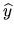
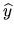

The general linear model (GLM) problem is
The GLM problem is solved by the driver routine xGGGLM
(see section 4.6).
Let  and 
be the computed values of x and y, respectively.
The approximate error bounds
and 
be the computed values of x and y, respectively.
The approximate error bounds
EPSMCH = SLAMCH( 'E' )
* Compute the 2-norm of the left hand side D
DNORM = SNRM2( N, D, 1 )
* Solve the generalized linear model problem
CALL SGGGLM( N, M, P, A, LDA, B, LDB, D, Xc, Yc, WORK,
$ LWORK, IWORK, INFO )
* Compute the F-norm of A and B
ANORM = SLANTR( 'F', 'U', 'N', M, M, A, LDA, WORK( M+NP+1 ) )
BNORM = SLANTR( 'F', 'U', 'N', N, P, B( 1, MAX( 1, P-N+1 ) ),
$ LDB, WORK( M+NP+1 ) )
* Compute the 2-norm of Xc
XNORM = SNRM2( M, Xc, 1 )
* Condition estimation
IF( N.EQ.M ) THEN
PBPSNM = ZERO
TNORM = SLANTR( '1', 'U', 'N', N, N, A, LDA, WORK( M+NP+M+1 ) )
CALL STRCON( '1', 'U', 'N', N, A, LDA, RCOND, WORK( M+NP+M+1 ),
$ IWORK, INFO )
ABPSNM = ONE / (RCOND * TNORM )
ELSE
* Compute norm of (PB)^+
TNORM = SLANTR( '1', 'U', 'N', N-M, N-M, B( M+1, P-N+M+1 ), LDB,
$ WORK( M+NP+1 ) )
CALL STRCON( '1', 'U', 'N', N-M, B( M+1, P-N+M+1 ), LDB, RCOND,
$ WORK( M+NP+1 ), IWORK, INFO )
PBPSNM = ONE / (RCOND * TNORM )
* Estimate norm of A^+_B
KASE = 0
CALL SLACON( N, WORK( M+NP+1 ), WORK( M+NP+N+1 ), IWORK, EST, KASE )
30 CONTINUE
CALL STRSV( 'Upper', 'No transpose', 'Non unit', N-M,
$ B( M+1, P-N+M+1 ), LDB, WORK( M+NP+N+M+1 ), 1 )
CALL SGEMV( 'No transpose', M, N-M, -ONE, B( 1, P-N+M+1 ),
$ LDB, WORK( M+NP+N+M+1 ), 1, ONE,
$ WORK( M+NP+N+1 ), 1 )
CALL STRSV( 'Upper', 'No transpose', 'Non unit', M, A, LDA,
$ WORK( M+NP+N+1 ), 1 )
DO I = 1, P
WORK( M+NP+I ) = WORK( M+NP+N+I )
END DO
CALL SLACON( M, WORK( M+NP+N+1 ), WORK( M+NP+1 ), IWORK, EST, KASE )
IF( KASE.EQ.0 ) GOTO 40
CALL STRSV( 'Upper', 'Transpose', 'Non unit', M, A, LDA,
$ WORK( M+NP+1 ), 1 )
CALL SGEMV( 'Transpose', M, N-M, -ONE, B( 1, P-N+M+1 ), LDB,
$ WORK( M+NP+1 ), 1, ZERO, WORK( M+NP+M+1 ), 1 )
CALL STRSV( 'Upper', 'Transpose', 'Non unit', N-M,
$ B( M+1, P-N+M+1 ), LDB, WORK( M+NP+M+1 ), 1 )
DO I = 1, N
WORK( M+NP+N+I ) = WORK( M+NP+I )
END DO
CALL SLACON( N, WORK( M+NP+1 ), WORK( M+NP+N+1 ), IWORK, EST, KASE )
IF( KASE.EQ.0 ) GOTO 40
GOTO 30
40 CONTINUE
ABPSNM = EST
END IF
* Estimate norm of (A^+_B)*B
IF( P+M.EQ.N ) THEN
EST = ZERO
ELSE
KASE = 0
CALL SLACON( P-N+M, WORK( M+NP+1 ), WORK( M+NP+M+1 ), IWORK, EST, KASE )
50 CONTINUE
*
IF( P.GE.N ) THEN
CALL STRMV( 'Upper', 'No trans', 'Non Unit', M,
$ B( 1, P-N+1 ), LDB, WORK( M+NP+M+P-N+1 ), 1 )
DO I = 1, M
WORK( M+NP+I ) = WORK( M+NP+M+P-N+I )
END DO
ELSE
CALL SGEMV( 'No transpose', N-P, P-N+M, ONE, B, LDB,
$ WORK( M+NP+M+1 ), 1, ZERO, WORK( M+NP+1 ), 1 )
CALL STRMV( 'Upper', 'No trans', 'Non Unit', P-N+M,
$ B( N-P+1, 1 ), LDB, WORK( M+NP+M+1 ), 1 )
DO I = N-P+1, M
WORK( M+NP+I ) = WORK( M+NP+M-N+P+I )
END DO
END IF
CALL STRSV( 'Upper', 'No transpose', 'Non unit', M, A, LDA,
$ WORK( M+NP+1 ), 1 )
CALL SLACON( M, WORK( M+NP+M+1 ), WORK( M+NP+1 ), IWORK, EST, KASE )
*
IF( KASE.EQ.0 ) GOTO 60
*
CALL STRSV( 'Upper', 'Transpose', 'Non unit', M, A, LDA,
$ WORK( M+NP+1 ), 1 )
IF( P.GE.N ) THEN
CALL STRMV( 'Upper', 'Trans', 'Non Unit', M,
$ B( 1, P-N+1 ), LDB, WORK( M+NP+1 ), 1 )
DO I = 1, M
WORK( M+NP+M+P-N+I ) = WORK( M+NP+I )
END DO
DO I = 1, P-N
WORK( M+NP+M+I ) = ZERO
END DO
ELSE
CALL STRMV( 'Upper', 'Trans', 'Non Unit', P-N+M,
$ B( N-P+1, 1 ), LDB, WORK( M+NP+N-P+1 ), 1 )
DO I = 1, P-N+M
WORK( M+NP+M+I ) = WORK( M+NP+N-P+I )
END DO
CALL SGEMV( 'Transpose', N-P, P-N+M, ONE, B, LDB,
$ WORK( M+NP+1 ), 1, ONE, WORK( M+NP+M+1 ), 1 )
END IF
CALL SLACON( P-N+M, WORK( M+NP+1 ), WORK( M+NP+M+1 ), IWORK, EST,
$ KASE )
*
IF( KASE.EQ.0 ) GOTO 60
GOTO 50
60 CONTINUE
END IF
ABPSBN = EST
* Get condition numbers and approximate error bounds
CNDAB = ANORM*ABPSNM
CNDBA = BNORM*PBPSNM
IF( PBPSNM.EQ.0.0E+0 ) THEN
* Then A is square and nonsingular
XERRBD = EPSMCH*( CNDAB*( ONE+DNORM/(ANORM*XNORM) ) )
YERRBD = 0.0E+0
ELSE
XERRBD = EPSMCH*( CNDAB*( ONE+DNORM/(ANORM*XNORM) ) +
$ 2.0E0*CNDAB*CNDBA*CNDBA*DNORM/(ANORM*XNORM) +
$ ABPSBN*ABPSBN*PBPSNM*PBPSNM*ANORM*DNORM/XNORM )
YERRBD = EPSMCH*( ABPSBN*ANORM*PBPSNM*PBPSNM +
$ PBPSNM*(ANORM*XNORM/DNORM + 2.0E0*CNDBA*CNDBA +
$ ONE) + CNDBA*PBPSNM )
END IF
For example, if
 ,
,